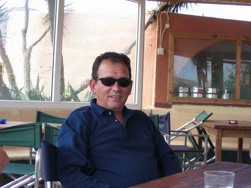
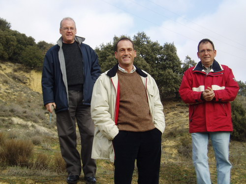
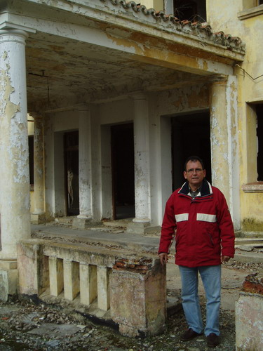

FOTOGRAFÍAS
de Javier Díez Montero
 |
 |
 |
Siendo Navidad y con un poco de tiempo a uno se le ocurre buscar en Internet
cosas raras que le importan
y me he encontrado esta pagina. http://patronato.iespana.es Ya he contactado con un grupo de compañeros de fatigas que enviaran fotos. Yo soy Javier Diez Montero alias "CAMILO". Internos estuvieron mis hermanos Alfonso, Agustín, y José Luis. |